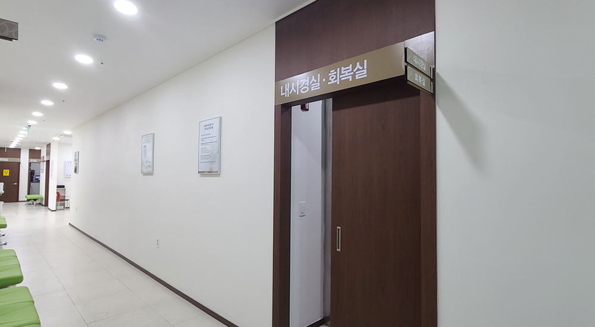
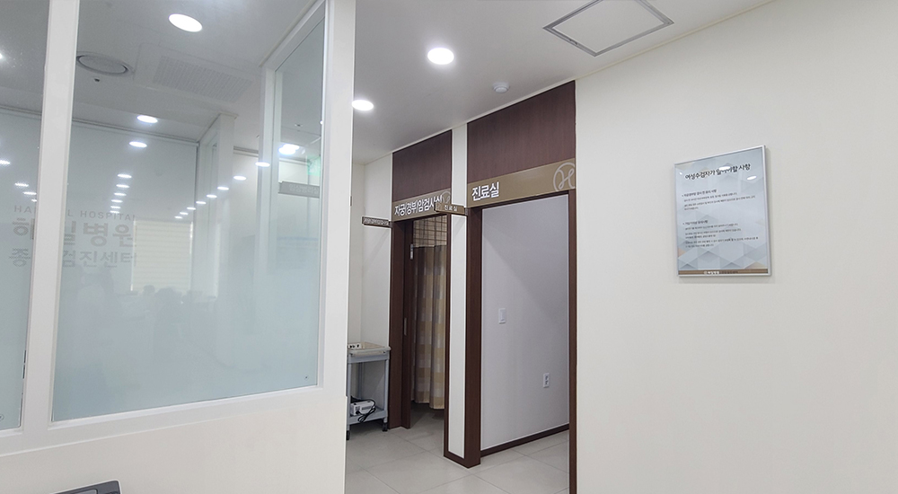
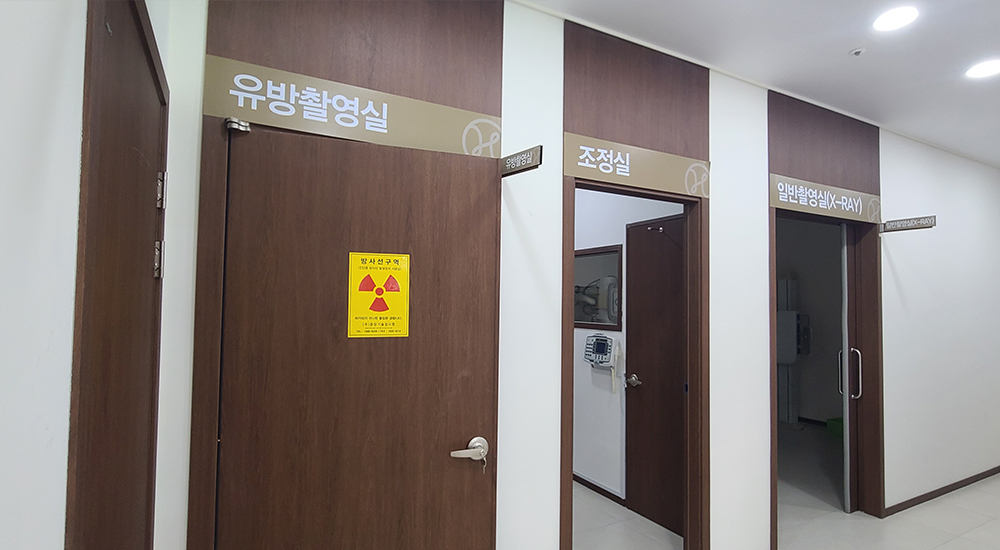
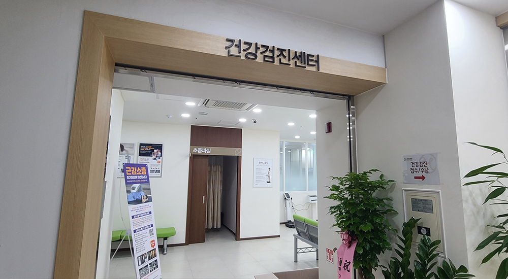

-
검진센터
- 정확한 진단과 근본적인 원인을 치료하는 병원이 되겠습니다.
검진센터 소개
- 해밀병원의 건강검진은
One-stop 진료 서비스를 통한 건강 지킴이입니다. - 이는 면역 치료와 검진을 기본으로 한 해밀병원의 중점 진료이며, 체계적이고 편안한
검진 시스템을 바탕으로 하여 정확하고 빠른 검진 결과를 약속드립니다.
해밀병원 검진센터 POINT
-
- POINT. 1
- 환자 개개인에 맞는 맞춤형 종합검진 프로그램
-
- POINT. 2
- 전문의가 함께하는 정밀한 정밀검진
(가정의학과 / 소화기내과)
-
- POINT. 3
- 첨단 의료장비 및 최신 의료 서비스 제공
-
- POINT. 4
- 쾌적한 시설, 편안하고 친절한 검진 시스템
- 
- 
- 
- 